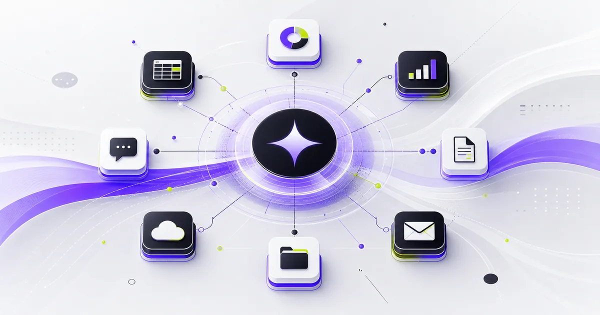

Google、Geminiの管理AIを拡張──長時間処理と社内連携を強化

- GoogleがGemini APIのManaged Agentsに新機能を追加した
- バックグラウンド実行、リモートMCP、カスタム関数、認証情報更新が中心
- 社内システムとつながるAIエージェントを作る会社に影響がある
何が発表されたか
Googleは2026年7月7日、Gemini APIのManaged Agentsに新しい機能を追加したと発表しました。主な内容は、長い処理をサーバー側で続けるバックグラウンド実行、リモートMCPサーバーとの連携、カスタム関数呼び出し、認証情報の更新です。
Managed Agentsは、Gemini API上で動くエージェント機能です。Googleの説明では、1つのAPIエンドポイントを呼ぶと、推論、コード実行、パッケージ導入、ファイル管理、Web情報の利用などを、Googleが用意する隔離されたクラウド環境で扱えます。
詳細
バックグラウンド実行では、時間のかかる処理をHTTP接続に張り付けたまま待つ必要が減ります。APIを呼ぶとIDが返り、アプリ側はあとから状態確認、進捗ストリーミング、再接続ができます。調査、コード実行、複数ステップの作業など、数分以上かかるAI処理に向いた仕組みです。
リモートMCPサーバー連携では、エージェントから外部のModel Context Protocolサーバーにつなげられます。つまり、会社が持つデータベース、社内API、業務ツールを、専用の中継処理を毎回作らずに、エージェントの道具として扱いやすくなります。Google Searchやコード実行などの組み込み機能と組み合わせることも示されています。
カスタム関数呼び出しも強化されています。サーバー側で自動実行する組み込みツールと、アプリ側で実行する自社の業務ロジックを分けて扱えます。さらに、短時間で切れるアクセストークンやAPIキーを、既存の環境IDに新しいネットワーク設定を渡して更新できると説明されています。
なぜ重要か
今回の発表は、AIエージェントを試作品から業務アプリに近づける変更です。社内システムとつなぐAIでは、長時間タスク、権限管理、外部ツール連携、途中再接続が問題になりやすいからです。
会社で見るべき点は、「AIが賢いか」だけではありません。どの社内データに接続するのか、認証情報をどう更新するのか、エージェントが失敗したときに人がどこで止めるのかが重要です。Managed Agentsの拡張は、そうした運用面をAPI側で扱いやすくする動きだと言えます。
※ 本記事は公開時点の一次情報にもとづいています。最新の状況は出典をご確認ください。
← AI深報トップへ